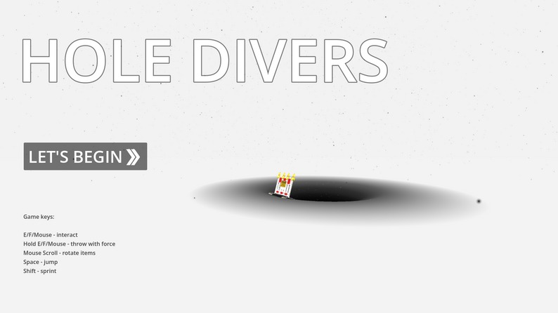
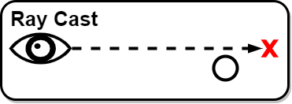
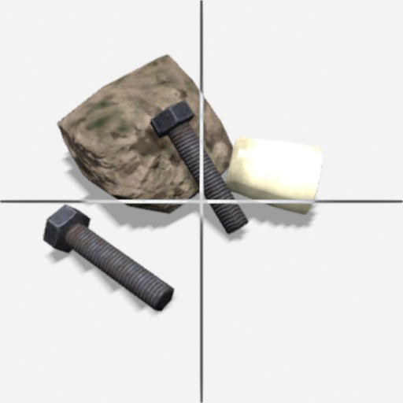
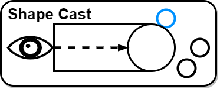
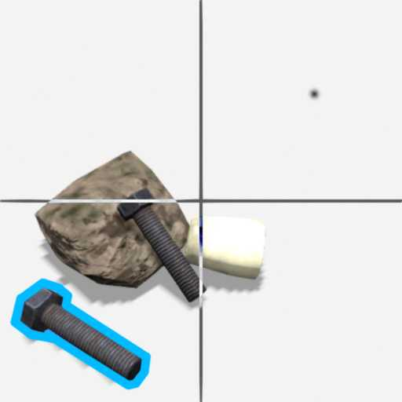
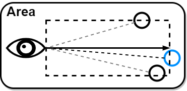
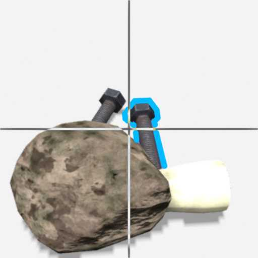
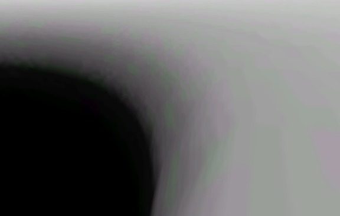
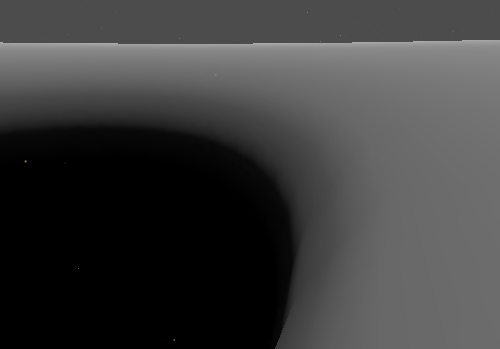

University Game Project · GodotHochschulprojekt · Godot
Hole Divers
A surreal first-person puzzle game about curiosity, two inverted dimensions and a mysterious hole.Ein surreales First-Person-Puzzle-Game über Neugier, zwei invertierte Dimensionen und ein mysteriöses Loch.
GodotGDScriptBlenderGame DesignGame Design

ConceptKonzept
White world → black holeWeiße Welt → schwarzes Loch
Black world → white holeSchwarze Welt → weißes Loch
Crosshair-Free Pickup SystemPickup-System ohne Fadenkreuz
RayCast


Too precise without crosshairOhne Fadenkreuz zu präzise
Small items are easy to missKleine Items werden leicht verfehlt
ShapeCast


Easier aimingBesseres Zielen
Can select the wrong nearby itemKann das falsche nahe Item wählen
Area


Finds all reachable itemsFindet alle erreichbaren Items
Chooses the item closest to view directionWählt das Item nahe der Blickrichtung
Hole ShaderLoch-Shader

Compressed image textureKomprimierte Bildtextur
Godot compression created colored artifacts and visible pixels.
Godot-Kompression erzeugte farbige Artefakte und sichtbare Pixel.

Procedural shaderProzeduraler Shader
Rebuilt with Godot Shading Language, without texture artifacts.
Mit Godot Shading Language neu umgesetzt, ohne Textur-Artefakte.
Technical NotesTechnische Notizen
JSON Crafting
Recipes can be changed without rebuilding the game.Rezepte können ohne Neubuild geändert werden.
MetricsMetriken
Interaction, dimension changes and crafting results saved as JSON.Interaktionen, Dimensionswechsel und Crafting-Ergebnisse als JSON.
PlaytestsPlaytests
9 testers, 100% completion rate, high experimentation.9 Tester, 100% Abschlussrate, viel Experimentieren.